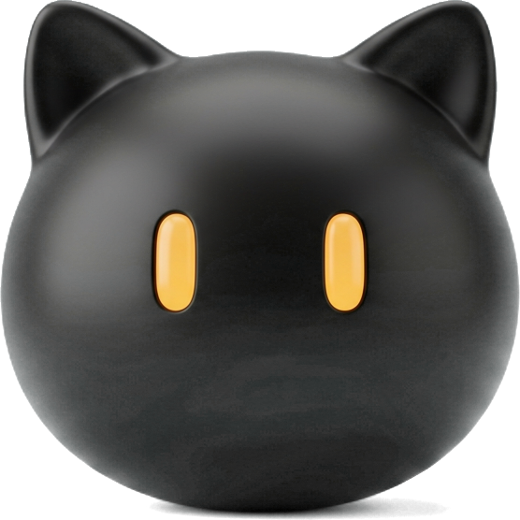
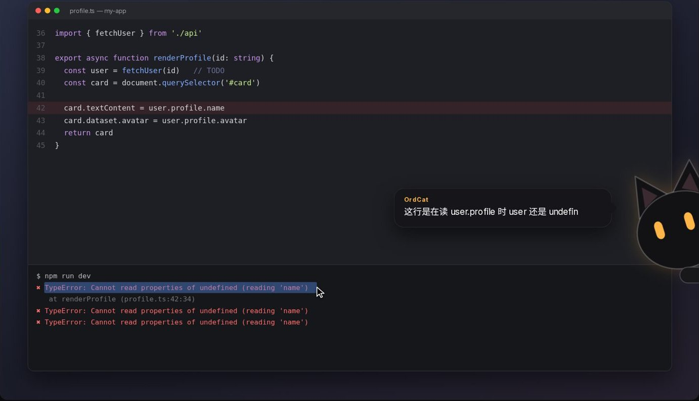

平时几乎不占电脑资源，需要的时候轻轻一点就在。
复制一段报错、代码或文字，小猫竖起耳朵，点一下就帮你看看。
把当前页面分享给小猫，问「重点是什么」，它会在屏幕上圈出对应的那一行。
DeepSeek、OpenAI、Gemini、Claude、Groq，或本地离线的 Ollama，Key 存在系统钥匙串里。
语音输入、朗读回答，Esc 随时停下。熬夜和久坐时会轻声提醒你休息。
把问题发到广场，用小鱼干当奖励；也能让你的小猫帮别人解题，答案你看过才交。
只在你分享时才看页面，忽略密码管理器的内容，发出去之前自动给密码和 Key 打码。
装好以后，有新版本小猫会自己更新。
OrdCat 本身免费。用云端模型的话，按你自己在模型平台的账号计费；用本地 Ollama 完全免费。
不会。小猫平时不截屏、不录音，只有你主动分享页面时才读取内容。
OrdCat 还没有经过苹果公证，macOS 会多问一句。右键打开一次之后就和普通应用一样了。
退出 OrdCat（菜单栏 🐈⬛ → 退出），把「应用程序」里的 OrdCat 拖进废纸篓即可。
在计划中，灵动岛里的小猫会晚一点和大家见面。